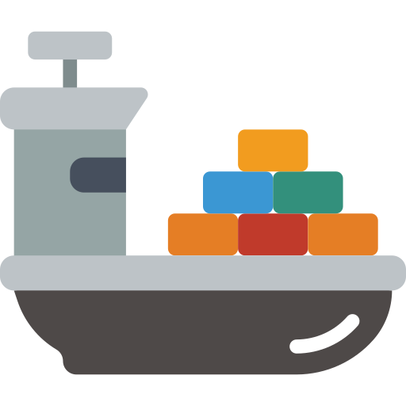

<div class="boat" [style.left]="boatX$ | async" [style.top]="boatY$ | async">
  
  <span
    class="trash-radar"
    [style.width]="(trashReach$ | async) + 'px'"
    [ngClass]="{ active: (searchingForTrash$ | async) === true }"
  ></span>
</div>
